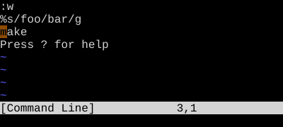
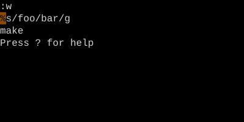

Command-Line History
↑/↓ for prefix-match, q: for the full window.
From the : prompt, ↑ and ↓ scroll history filtered by what you've already typed. q: opens a full editable history window — every Ex command you've ever run, in a buffer you can edit and re-execute.
Vim remembers everything you type at the : prompt. Two interfaces let you re-use it: arrow scrolling and the full history window.
Arrow scrolling
| Key | Effect |
|---|---|
| ↑ / ↓ | Scroll history filtered by current prefix |
| Ctrl-P / Ctrl-N | Same — without prefix filter |
If you've typed :s then press ↑, only previous commands starting with s are shown. Ctrl-P ignores the prefix and walks plain history.
The history window: q:
| Key | Note |
|---|---|
| {key:q}{key::} | Opens a buffer with full Ex command history |
| {key:k} | Move up to a previous command |
| {key:Enter} | Execute that line |
| {key:Ctrl-C} | Or close the window without running anything |
Worked example — q:
Command-line history as an editable buffer.


Watch
- 📺 #0446 q: — Command History Window (not yet published)
- 📺 #0447 q/ q? — Search History (not yet published)
See also: Repeat Last Ex ({key:@:}), Editing the Command Line